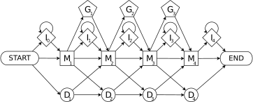

PathRacer: racing profile HMM paths on assembly graph
Overview
PathRacer is assembly graph against profile HMM aligning tool supporting both local-local and global-local (aka glocal) alignment and both nucleotide and amino acid profile HMMs. The tool finds all proper alignments rather than only the best one. That allows extracting all genes satisfying HMM gene model from the assembly.
PathRacer is a tool for alignment of assembly graph against pHMM. It provides the set of k most probable paths traversed by a HMM through the whole assembly graph. It supports both nucleotide and amino-acid pHMMs performing nt-to-aa translation on-fly walking through frameshifts.
PathRacer has two versions: main pathracer is for aliening both nucleotide and amino-acid pHMMs against assembly graphs and
pathracer-seq-fs is for aligning amino-acid pHMMs against separate sequences allowing indels in the nucleotide space.
pathracer is supposed to be used on complex metagenome assembly graphs for fragmented gens assembly and annotation.
pathracer-fs-seq is supposed to be used as a replacement of original HMMer for sequences with high indel rate, e.g., PacBio/ONT contigs.
Both tool use extended pHMM model allowing frame shifts:

but for pathracer-seq-fs this extension is crucial: for aligning amino-acid pHMMs without allowing indels in the nucleotide space
six frame translation + hmmsearch from HMMer package is more than enough.
Compilation
To compile PathRacer, run
After the compilation is complete, pathracer executable will be located in the bin folder.
Input
Currently, the tool supports only de Bruijn graphs in GFA format as produced by SPAdes or compatible assembler in this matter (e.g., MEGAHIT). Contact us if you need some other format support. Input sequences are supposed to be in FASTA/FASTQ format.
Profile HMM should be in HMMer3 format, but one can pass nucleotide or amino acid sequences as well. These sequences will be converted to proxy pHMMs. Aligning of these pHMMs would be equivalent to performing alignment using Levenshtein distance for each input sequence.
pathracer tool
pathracer command line options
Required positional arguments:
- Query file (.hmm file or .fasta)
- Assembly graph in GFA format
Main options:
--output,-oDIR: output directory--hmm|--nt|--aa: perform match against pHMM(s) [default] | nucleotide sequences | amino acid sequences--queriesQ1 [Q2 [...]]: queries names to lookup [default: all queries from input query file]--edgesE1 [E2 [...]]: match around particular edges [default: all graph edges]--global|--local: perform HMM-global, graph-local (aka glocal, default) or HMM-local, graph-local HMM matching--length,-lL: minimal length of resultant matched sequence; if ≤1 then to be multiplied on aligned HMM length [default: 0.9]--indel-rate,-rRATE: expected rate of nucleotides indels in graph edges [default: 0]. Used for AA pHMM aligning with frameshifts--topN: extract up to N top scored paths [default: 10000]; only unique paths are reported and therefore--rescore: rescore resulting paths by HMMer and produce output tables in HMMer standard formats--threads,-tT: the total number of CPU threads to use [default: 16]--parallel-components: process connected components of neighborhood subgraph in parallel--memory,-mM: RAM limit in GB (PathRacer terminates if the limit is exceeded) [default: 100]--annotate-graph: emit paths in GFA graph
Heuristics options:
--max-sizeMAX_SIZE: maximal component size to consider [default: INF]--max-insertion-length: maximal allowed number of successive I-emissions [default: 30]--no-top-score-filter: disable top score Event Graph vertices filter. Increases sensitivity of deep analysis (--top> 50000)
Debug output control:
--debug: enable extensive debug console output--draw: draw pictures around the interesting edges--export-event-graph: export Event Graph in binary format
In addition: Some other developer options that are not supposed to be tuned by the end-user. Could be removed in further releases.
pathracer output
For each input pHMM (gene model) pathracer reports:
- <gene_name>.seqs.fa: sequences correspondent to N best scored paths ordered by score along with their alignment in CIGAR format
- <gene_name>.nucls.fa: (for amino acids pHHMs only) the same sequences in nucleotides
- <gene_name>.edges.fa: unique graph edge paths sequences corresponding to best scored paths
- <gene_name>.{domtblout, pfamtblout, tblout}: (optional) edge paths realignment by HMMer in various default output formats
- event_graph_<gene_name>_component_<component_id>_size_<component_size>.bin: (optional, debug output) connected components of the event graph graph
- <component_id>.dot: (optional, plot) connected component of matched neighborhood subgraph
- <component_id>_<path_index>.dot: (optional, plot) neighborhood of the found path
In addition:
- all.edges.fa: unique edge paths for all pHMMs in one file
- pathracer.log: log file
- graph_with_hmm_paths.gfa: (optional) input graph with top scored paths added
pathracer-seq-fs tool
pathracer-seq-fs command line options
Required positional arguments:
- Query .hmm file (.fasta is not supported yet)
- Sequence file (.fasta or .fastq)
Main options:
--output,--queries,--global | --local,--top,--threads,--memory: the same as in mainpathracer--sequencesS1 [S2 [...]]: sequence IDs to process [default: all input sequences]--indel-rate,-rRATE: expected rate of nucleotides indels in graph edges [default: 0.05]. Used for AA pHMM aligning with frameshifts--max-fsN: maximal allowed number of frameshifts in a reported sequence [default: 10]--cutoffCUTOFF: bitscore cutoff for reported match; if <= 1 then to be multiplied on GA HMM cutoff [default: 0.7]",
Heuristics options:
The same as in main pathracer
pathracer-seq-fs output
For each input pHMM (gene model): <gene_name>.seqs.fa and <gene_name>.nucls.fa, the same as in main pathracer
Output files format
<gene_name>.seqs.fa and <gene_name>.nucls.fa files contain metainformation in FASTA headers.
For main pathracer the header format is:
>Score=PathRacer score|Edges=edges path|Position=starting position on the first edge|Alignment=CIGAR alignment
E.g.:
>Score=366.239|Edges=255162_24353'|Position=9210|Alignment=186M2D186M
Prime (') after an edge ID means reverse complement
For pathracer-seq-fs the header format is:
>Score=PathRacer score|Bitscore=HMMer bitscore for the whole sequence without incomplete codons|PartialBitscore=Maximal HMMer bitscore for fragment between frameshifts|Seq=Sequence ID|Position=Starting position in the sequence|Frameshifts=#Frameshifts|Alignment=CIGAR alignment
E.g.
>Score=342.689|Bitscore=539.274|PartialBitscore=238.41|Seq=RB12-N|Position=2935|Alignment=55M1G1M1D20M1D14M1I3M2D11M1P1M1D64M1D62M1D1M1G23M1D30M
MSLYRRLVLLSCLSWPLAGFSATALTNLVAEPFAKLEQDFGGSIGVYAMDTGSGA=CSYR
AEERFPLCSSFKGFLAAVLARSQQGRLAGHTHPLRQNALVPWSPIS-KYLTTGMTVAELS
AAAVQYSDNAAANLLLKELGGPAGLTAFMRSIGDTTFRLDRWELELNSAIRAMRAIPHRR
ARDGKLTKLTLGSALAAPQRQQFVDWLKGNTTGNHRIRAAVPADWAVGDKTGTCG=YGTA
NDYAVVWPTGRAPIVLAVYRAPNKDDKHSEAVIAAAARLALEDWASTAV
For alignment with frameshifts the extemded CIGAR/FASTA is used: P/"-" — one nucleotide insertion, G/"=" — two nucleotides insertion
Examples
One can download example datasets from http://cab.spbu.ru/software/pathracer/
- urban_strain.gfa: strain assembly graph of Singapore clinical isolation ward wastewater metagenome (SRA accession SRR5997548, dataset H1)
- bla_all.hmm: 159 beta-lactamase family pHMMs from AMRFinder database https://www.ncbi.nlm.nih.gov/pathogens/antimicrobial-resistance/AMRFinder/
- ecoli_mc.gfa: assembly graph of E. coli str. K12 substr. MG1655 multicell isolate (SRA accession ERA000206)
- bac.hmm: 16S, 23S, and 5S ribosomal subunit pHMMs
- synth_strain_gbuilder.gfa: strain assembly graph of SYNTH mock metagenome dataset (SRA accession SRR606249)
- synth16S_new.fa: 16S rRNA sequences of SYNTH organisms obtained from SILVA database
- plasmids-ONT.fa: 7 ONT-assembled AMR-related plasmids from Li et al, 2018
Lookup for beta-lactamase genes (amino acid pHMMs) in Singapore wastewater
Lookup for beta-lactamase genes (amino acid pHMMs) in AMR ONT plasmids (many indels!)
Lookup for 16S/5S/23S (nucleotide HMMs) in E.coli multicell assembly
Lookup for known 16S sequences in E.coli multicell assembly
Lookup for known 16S sequences in SYNTH mock metagenome assembly
pathracer synth16S_new.fa synth_strain_gbuilder.gfa --nt --output pathracer_synth_strain_gbuider_16S_seqs
Let us extract all 16S sequences from SYNTH mock metagenome assembly.
For this we increase --top and disable Event Graph vertices filter (--no-top-score-filter)
Deep analysis of extremely complicated dataset also require stack and memory limits tuning
ulimit -s unlimited &&
export OMP_STACKSIZE=1G
pathracer bac.hmm synth_strain_gbuilder.gfa --queries 16S_rRNA -m 250 --top 1000000 --output pathracer_synth_strain_gbuilder_16s --no-top-score-filter
References
If you are using PathRacer in your research, please cite:
Shlemov and Korobeynikov, 2019
In case of any problems running PathRacer please contact SPAdes support attaching the log file.